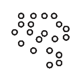

Table of Contents
Home
About Me
Education
Awards
Technical Skills
Projects
Contact
About Me
I believe the way we think, behave and solve our day-to-day problems
provides some of the most
powerful data we, as humans, generate in our lives. The
data we create and the patterns it follows hold immense
potential if we observe and analyze it thoroughly.
Our different backgrounds and what we have seen, learned, and experienced shape our unique character identities.
As Jean-Paul Sartre, the French existentialist philosopher, says:
Even choosing not to choose is a choice.
We are forced to constantly make different decisions in our lives that lead to
the creation of unique, valuable information, which, if analyzed,
benefits everyone to make more informed decisions when facing the same or similar challenges.
However, this is not the full extent of the power of data. Unknown
patterns hidden in our characters have the potential to predict how we will behave in
specific situations, times, and locations. These patterns can even
expand to reveal the unconscious potential behaviors we might exhibit
in hypothetical situations and environments that we are still unaware
of. That is the true power of a data scientist—someone who knows how
to best retrieve data, analyze it, and build the most sophisticated
statistical models to transform raw data into a into a deeper understanding of human nature.
My interest in data analysis and data science lead me to enrol in York University Information Technolog program to
not only expand and enhance my technical knowledge in this feild, but also apply the best of my knowledge to extract
insight from the bsuiness and commerce sectors in order to identify our hidden behavioral patterns in the world of finance.
Education
Information Technology
(Bcom)
Sep 2023 - Present
York University
Awards & Scholarships
Dean's Circle of Student Scholars
Jan 2025
Awarded to the highest-achieving students in the Faculty of Liberal Arts and Professional Studies.
York University Continuing Student Scholarship
Sep 2024
Awarded to undergraduate students with outstanding academic results.
Technical Skills

Python

Java

SQL

Tableau

Pytorch

Scikit-learn

Pandas

NumPy

Matplotlib

MATLAB

Ethical Hacking

HTML

CSS

Java Script

Excel
Projects
Bio Website
Designed and developed this bio website using HTML, CSS, and JavaScript.

Data Analysis and Classification
Developed a classification tree model in MATLAB to predict wheat seed varieties based on kernel geometrical properties.
My role involved data cleaning, preprocessing, and applying machine learning techniques to improve predictive accuracy.
Sales, Cost, and Gross Profit Analysis
Analyzed sales and cost data from 2015 to 2018 to assess the company's financial performance, focusing on retained earnings, gross profit, and regional/product-line trends.
My work included data cleaning, pivot table creation, financial calculations, and insight generation.